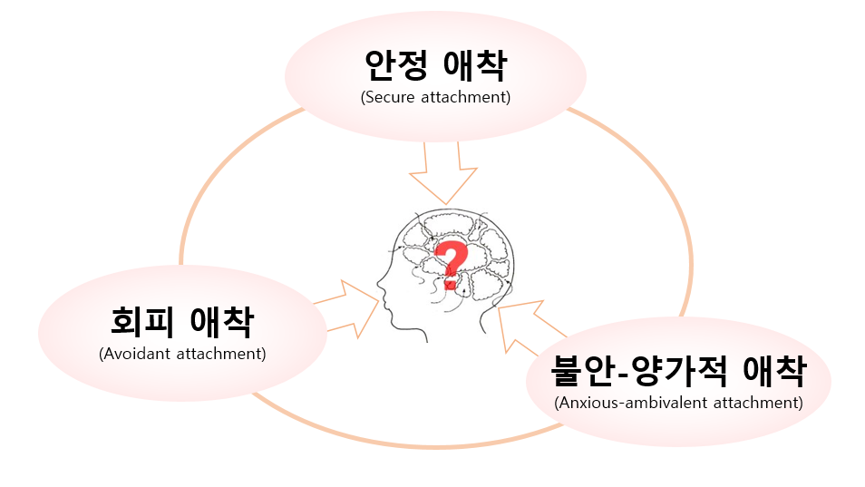

1. 보울비의 사상
존 보울비 (John Bowlby, 1907∼1990) 는 영국의 정신과 의사이자 정신분석가로, 현대 발달심리학과 아동정신의학에 지대한 영향을 미친 애착이론(Attachment Theory)의 창시자이다. 그는 의학과 심리학, 정신분석학을 폭넓게 연구하며, 특히 전쟁과 사회적 변화로 인해 부모와 분리된 아동들의 정서적 어려움에 주목하였다. 제2차 세계대전 중 보육원이나 위탁가정에서 자란 아동들을 장기간 관찰한 결과, 초기 양육자와의 관계 단절이 아동 발달에 심각한 부정적 영향을 미친다는 사실을 발견했다. 이러한 경험은 그가 애착 개념을 정립하는 중요한 계기가 되었다.
2. 애착의 의의
보울비는 애착을 “영아가 주 양육자와 맺는 지속적이고 정서적인 유대 관계”로 정의했으며, 이를 생물학적으로 진화한 본능적 행동 체계로 보았다. 그는 애착이 단순한 감정적 친밀감을 넘어서 안전 기반(safe base)의 역할을 한다고 강조하였다. 안정된 애착 관계는 아동이 새로운 환경을 탐색하고 사회적 관계를 확장할 수 있는 심리적 발판이 된다. 반대로, 애착이 결핍되거나 불안정하게 형성되면 불안, 회피, 공격성, 대인관계 어려움 등 다양한 심리·행동 문제가 발생할 가능성이 높다.
3. 애착 유형
보울비의 연구에 따르면, 애착 발달은 다음과 같은 주요 유형으로 구분된다.
1) 안정 애착
안정 애착(Secure attachment)은 양육자가 일관된 관심과 정서적 지지를 제공할 때 형성되며, 아동은 신뢰감과 안정감을 바탕으로 탐색 행동을 활발히 보인다.
2) 불안-양가적 애착
불안-양가적 애착(Anxious-ambivalent attachment)은 양육자의 반응이 불일관할 때 나타나며, 아동은 불안과 의존, 양가적인 감정을 동시에 보인다.
3) 회피 애착
회피 애착(Avoidant attachment)은 양육자가 정서적으로 무관심하거나 거부적일 때 나타나며, 아동은 관계 형성을 회피하거나 정서 표현을 억제한다.

4. 애착이론의 결과 및 시사점
보울비의 제자인 메리 에인스워스(Mary Ainsworth)가 실시한 낯선 상황 실험(Strange Situation Experiment)은 이러한 애착 유형을 실증적으로 뒷받침하였다. 이 연구는 애착이 아동기 발달뿐 아니라 성인기의 대인관계, 정서조절, 자아정체감 형성에도 장기적인 영향을 미친다는 점을 밝혀냈다.
보울비의 애착이론은 교육, 상담, 사회복지, 정신건강 영역에서 널리 활용되고 있다. 특히 영유아기 안정 애착 형성을 돕는 부모 교육, 위기 아동의 심리 회복 프로그램, 입양·위탁가정 지원정책 등 다양한 실천 분야에서 중요한 이론적 근거를 제공한다. 그는 “안정된 초기 관계가 평생의 정서적 안녕과 사회적 적응의 기초”임을 강조하였으며, 이는 현대 발달심리학의 핵심 원리로 자리 잡았다.
참고문헌
Bowlby, J. (1969). Attachment and Loss: Vol. 1. Attachment. New York: Basic Books.
Bowlby, J. (1988). A Secure Base: Parent-Child Attachment and Healthy Human Development. New York: Basic Books.
이현림, 이순형 (2018). 『애착과 인간발달』. 서울: 학지사.
김혜원, 정문자 (2014). 『애착이론과 부모교육』. 서울: 양서원.
2022.02.06 - [분류 전체보기] - 분리 불안과 불안 심리의 차이 - 낯가림, 애착, 두려움과 공포
분리 불안과 불안 심리의 차이 - 낯가림, 애착, 두려움과 공포
분리불안과 불안의 의미 분리불안(separation anxiety)이란 발달과정과 일상생활의 적응 정도에 따라 아이들에게 흔히 나타나는 증세이다. 최초 어머니상(primary mother-figure)의 상실감에 따른 공포증은
think-sis.co.kr